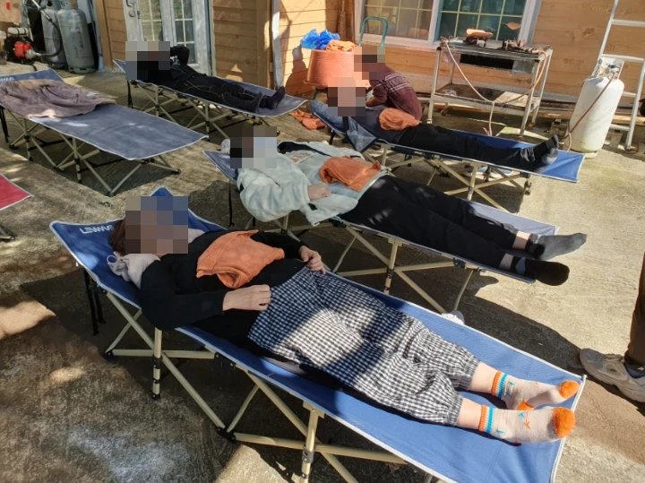
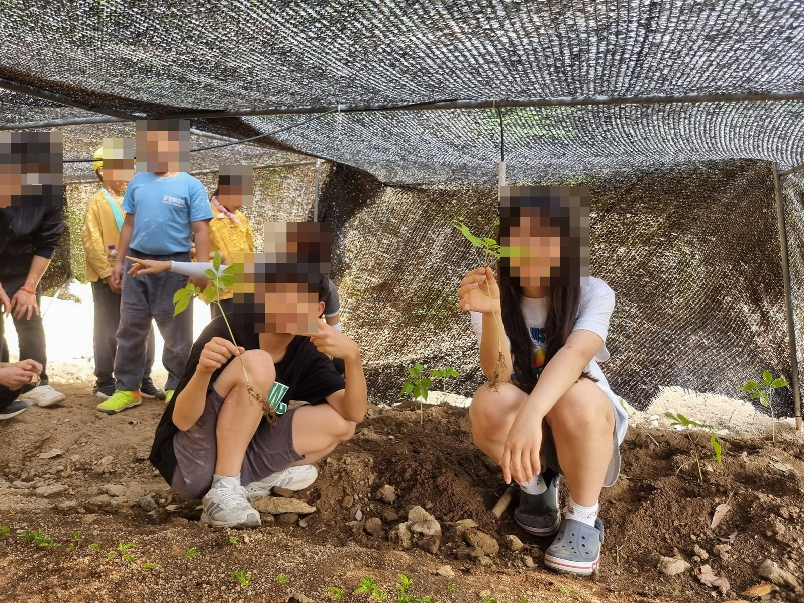
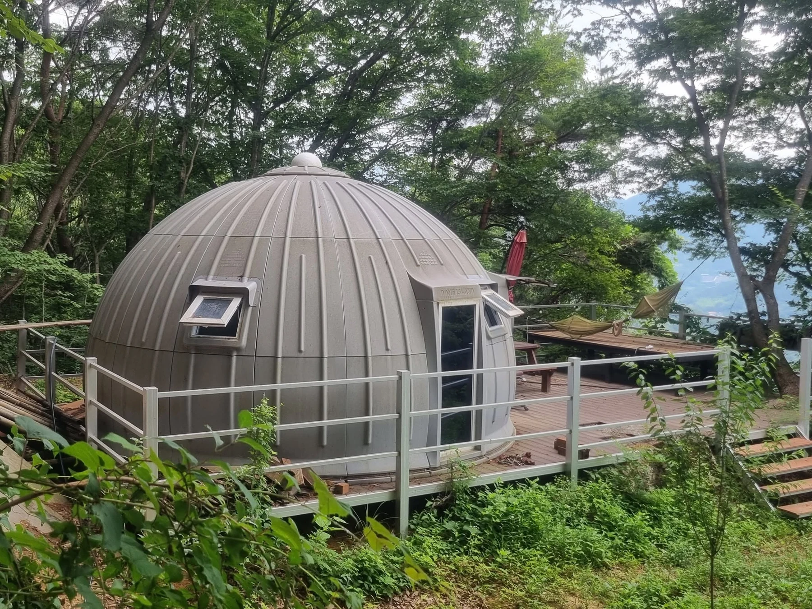

자연 속에서 만나는 특별한 경험

FOOT BATH목초액 족욕 체험
지리산 풍경을 바라보며 따뜻한 족욕과 여유를 즐기는 시간.

TRADITIONAL WARMTH황토기와 온열 체험
따뜻한 황토기와를 활용하는 전통 온열 체험.

GINSENG산양삼 수확 체험
산양삼의 재배 환경과 수확 이야기를 만나보세요. 수확 가능 여부는 사전 문의해 주세요.

NATURE RETREAT마적대 자연 휴식
산과 계곡, 노을을 바라보며 자연 속에서 쉬어가는 시간.
운영 여부, 비용, 소요 시간은 방문 전 문의해 주세요. 족욕 및 온열 체험은 개인의 건강 상태를 고려하고 화상에 주의해 주세요.
체험 문의농원 체험 01농원 체험 02농원 체험 03농원 체험 04숲속 휴식숲속 돔 쉼터 같은 자리, 매일 다른 지리산
농원에서 직접 촬영한 풍경과 일상입니다.
비가 그친 뒤의 지리산푸른 산과 계곡마적대 테라스나뭇잎 사이로 비치는 햇살햇살이 머무는 계곡고요한 산 능선노을빛 테라스지리산의 노을농원의 소박한 일상숲 사이로 바라본 계곡농원의 돌담과 숲산자락의 농원눈 덮인 마적대 지리산 운해겨울 설경지리산 일출푸른 여름 산세숲 사이 햇살 마적도사의 전설을 따라 걷는 길
용유담, 모전마을, 세진대, 마적대, 송전마을 주변의 자연과 이야기를 만나보세요.
탐방로 이용 가능 여부와 기상 상황은 방문 전 확인해 주세요.
오시는 길주변 탐방 01주변 탐방 02주변 탐방 03주변 탐방 04 농원 체험 및 방문 문의
희망 방문일, 인원, 관심 프로그램을 알려주세요.
경상남도 함양군 휴천면 송전리 611-1
오시는 길